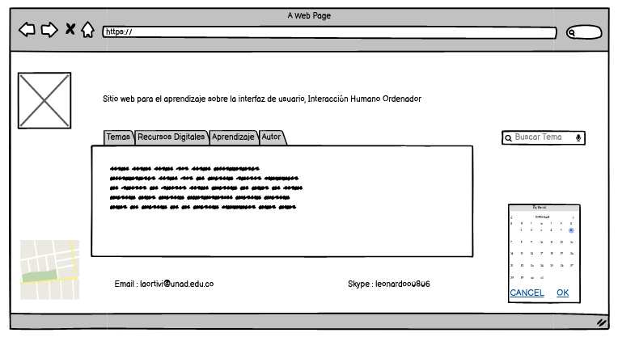

¿Por qué es importante el estudio de la Interacción Humano-Computadora?
La Interacción Humano-Computador es una disciplina que abarca el diseño, implementación y evaluación del componente interactivo
de las aplicaciones computacionales dirigidas a los humanos. Por su esencia, es un área multidisciplinaria donde convergen diversos tipos de especialistas.
Este trabajo destaca la importancia de esta disciplina considerando el nuevo rol social de la informática en el contexto de los últimos años.
El objetivo de este trabajo es esbozar algunos de los problemas que ocurren en el diseño de interfaces de usuario,
los cuales surgen del carácter multidisciplinario de los equipos de desarrollo y las dificultades en su integración con la Ingeniería de Software,
en la búsqueda de interfaces usables; así como el planteamiento de soluciones a los problemas anteriores a través del
uso de los patrones de interacción en un método para la construcción de un prototipo de la interfaz de usuario.
Este método integra el desarrollo de software y de la interfaz de usuario, y ha sido validado a través de casos de estudio que
han permitido depurarlo y evidenciar su aplicabilidad y efectividad.
MOCKUP DEL DISEÑO DE LA PAGINA WEB
Imagen propia - 07 de marzo de 2021
Referencias :
Albornoz, M. C., Berón, M., & Montejano, G. A. (2017, September). Interfaz gráfica de usuario: el usuario como protagonista del diseño. In XIX Workshop de Investigadores en Ciencias de la Computación (WICC 2017, ITBA, Buenos Aires).
Chanchí, G. E. G., Vargas, P. A., & Campo, W. Y. M. (2019). Construcción de recursos educativos para la temática de accesibilidad en el curso de interacción humano computador.
Revista Ibérica de Sistemas e Tecnologias de Informação, (E23), 171-183.